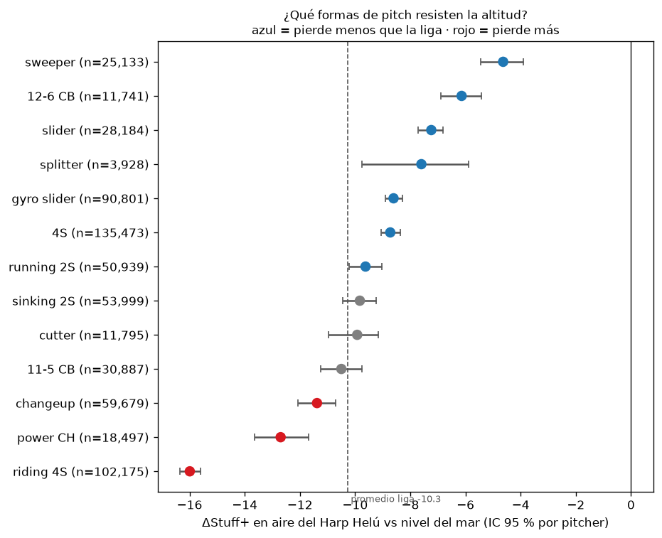
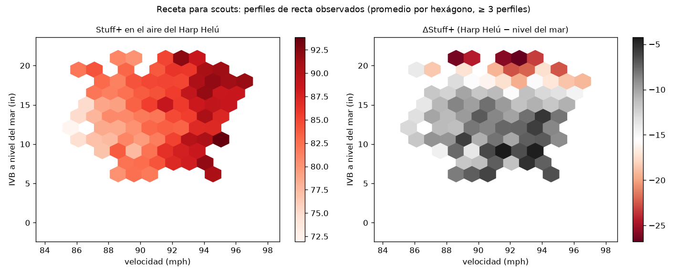

Documento técnico · ISAC Sports Analytics Hackathon 2026 · Diablos Rojos
El Harp Helú (Ciudad de México, ~2,240 m) tiene un aire más ligero que el de cualquier parque de nivel del mar. Los modelos públicos de calidad de pitcheo, como Stuff+, Location+ y Pitching+ de FanGraphs (McGrattan, 2023), se entrenan con datos de MLB y su descripción pública no menciona parques, altitud ni ajustes de entorno. Para un cuerpo técnico que evalúa lanzadores en la LMB, el mismo lanzamiento no vale lo mismo en dos aires distintos.
Pregunta del reto. ¿Cuánto vale cada lanzamiento en el aire de la CDMX, y qué perfiles conviene reclutar?
Contribución. Stuff+ 2240 (i) mide la densidad del aire por juego a partir de la física de cada trayectoria, en lugar de usar una etiqueta de altitud; (ii) identifica estadios y equipos sin metadatos de parque; (iii) define la identidad del lanzamiento con rasgos que el aire no cambia; y (iv) separa un modelo físico de uno de resultado para poder responder el contrafactual el mismo release, en el aire de la CDMX contra el de nivel del mar.
Resultados principales.
Stuff+ evalúa un lanzamiento solo por sus rasgos físicos (velocidad, movimiento, extensión, ángulo de salida; los secundarios se comparan contra la recta principal del lanzador). Location+ evalúa dónde y en qué conteo se lanzó, y Pitching+ combina ambas (McGrattan, 2023). En el modelo de FanGraphs, 10 puntos equivalen a una desviación estándar a nivel de lanzamiento (McGrattan, 2023). Nosotros adoptamos la misma lectura de la escala (§2.3) y añadimos lo que ese modelo no documenta: el entorno.
Sobre la pelota actúan el arrastre y la fuerza de Magnus, ambas proporcionales a la densidad del aire $\rho$ (Nathan et al., 2006):
con $A$ el área frontal, $m$ la masa, $v$ la rapidez, y $C_D$, $C_L$ los coeficientes de arrastre y sustentación. Con $C_L$ y $v$ dados, la desviación lateral o vertical acumulada en un tiempo de vuelo $T$ es aproximadamente
Si $\rho$ baja 16 %, la curvatura inducida por el giro baja en esa misma proporción, de primer orden. El arrastre también cae, de modo que el tiempo de vuelo $T$ es algo menor y la recta llega al plato con más velocidad. De ahí la pérdida de "ride" de la recta y la caída más corta de la curva.
La sustentación se relaciona con el giro mediante la eficiencia de giro $S$, con la relación empírica de Nathan $C_L = 1/(2.32 + 0.4/S)$ que usa stuffplus/physics/aero.py (la forma exacta no la reverificamos contra la fuente; ver (Nathan et al., 2006; Nathan, 2021) para las mediciones y para separar el movimiento Magnus del no Magnus, y (Nathan; Nathan) como lectura sobre componentes del giro). El planteamiento del reto afirma que el break de una curva de 18" baja a 14–15" en Coors (1,609 m); es la cifra del reto y no la verificamos de forma independiente. Para la relación entre altitud y carreras: (Richardson, 2014).
Sea $i$ un lanzamiento con rasgos de release y arsenal $\mathbf{z}_i$ (velocidad, giro, eje, extensión, ángulo de brazo, diferencias contra la recta del lanzador, etc.) y sea $\rho$ la densidad relativa del aire, con $\rho=1$ a nivel del mar. El modelo de dos etapas es:
pitch_id.donde $\mathcal{K}$ son los resultados del lanzamiento (strike cantado, swing y fallo, contacto por tipo, bola, etc.) y $V_k$ su valor en carreras calibrado a la LMB (cambio de conteo y linear weights (FanGraphs Sabermetrics Library; Tango, 2008), con RunsScored).
Sean $\mu_0$ y $\sigma_0$ la media y la desviación estándar de $-\widehat{xRV}_i(\rho_{\text{mar}})$ en los lanzamientos de la LMB de la temporada de referencia, evaluados a nivel del mar. Definimos
RHO_HARP_HELU).Location+ y Pitching+ siguen la misma regla con sus propias entradas. Location+ se centra por conteo y tipo de lanzamiento. Toda cifra del documento indica qué sabor usa.
stuffplus.schema.clean) quedan 627,602 filas. La variable ambiental es altitude_category (No / Medium / Extreme), sin identificador de estadio.AutoPitchType según el aire. Para los mismos lanzadores, comparar Extreme con No cambia el uso de etiquetas hasta 3.33 pp (p. ej. Sinker y Changeup −2.8 pp, Cutter y Slider +2.5 pp). Una identidad basada en rasgos invariantes (pitch_id, HACK-029) lo reduce a 0.49 pp en pitch_family; el piso de ruido de la prueba de permutación es 0.40 pp, así que el margen es estrecho. SpinRate se excluyó de la identidad porque sube unos 17 rpm en Extreme dentro del mismo lanzamiento. Las subformas de slider siguen moviéndose más de 0.5 pp (sweeper −1.07 pp).reports/targets/run_environment_by_altitude.csv.| Bucket | Juegos | $\hat\rho$ medio (de) | Carreras esperadas al iniciar la entrada | Lanzamientos |
|---|---|---|---|---|
| Sin altitud | 1,003 | 1.001 (0.044) | 0.739 | 292,377 |
| Altitud media | 509 | 0.892 (0.042) | 1.004 | 154,193 |
| Altitud extrema | 602 | 0.841 (0.033) | 1.113 | 181,032 |
| Harp Helú (franquicias 11 y 5) | 148 | 0.819 [0.814, 0.824] | — | — |
Densidad relativa del aire y ambiente de carreras por bucket (reports/physics/rho_by_bucket.csv, reports/targets/run_environment_by_altitude.csv, reports/park_id/harp_helu.md).
Los valores de carrera se recalculan con la LMB. La LMB anota 0.144 carreras por aparición al plato contra 0.117 en la MLB (1.23×), y un jonrón vale 1.85 carreras más que un out contra 1.65. La referencia MLB es una instantánea de FanGraphs Guts! que no verificamos (reports/targets/lmb_vs_mlb.csv, columna mlb_verified = False). Por eso entrenar con pesos de MLB subvaluaría el daño en la LMB.
De la trayectoria ajustada de 9 parámetros se obtiene la aceleración por arrastre (a lo largo de $-\hat v$, con gravedad retirada) y la de Magnus (perpendicular a $v$). De ahí, $C_D$-proxy $=a_D/v^2$ y $C_L$-proxy $=a_L/v^2$. La densidad del juego es $\hat\rho$ = mediana del $C_D$-proxy de las rectas ÷ la de los juegos sin altitud; los juegos con menos de 30 rectas se encogen hacia su parque. Medias por bucket (reports/physics/README.md): 1.001 (No), 0.892 (Medium), 0.841 (Extreme).
Advertencia. Si ambos coeficientes fueran $\propto\rho$, el cociente $C_L/C_D$ sería constante. En los datos baja ~9 % en Extreme ($C_D$ −16 %, $C_L$ −24 %), y la eficiencia de giro cae de 0.61 a 0.52. No lo resolvimos: puede ser un efecto real (régimen de Reynolds/giro) o un artefacto de calibración de Trackman por parque. Por eso los $\Delta$ de movimiento se estiman empíricamente (efectos fijos por lanzador-temporada y pitch_id) y no con el modelo teórico de $C_L$, y no presentamos deltas de eficiencia de giro como hecho.
Multi-target: $P$(swing), $P$(whiff), $P$(chase), $P$(strike cantado), $P$(contacto débil), $P$(rola), $P$(contacto fuerte) y el valor de carreras $xRV$, con linear weights y matriz de expectativa de carreras recalculados con datos LMB (no MLB). Los pesos para combinarlos salen de regresar el RV observado, no se fijan a mano.
Por qué componentes y no una regresión directa. El valor de carreras de un lanzamiento es casi todo ruido de bola o strike: la regresión directa del esqueleto v0 superaba al modelo por conteo en solo 0.02 % (analysis/v0/README.md). Predecimos lo que la física sí controla y lo convertimos a carreras.
pitch_family y $\rho$. Sin conteo ni ubicación. Salidas: (1) $P$(bola, strike cantado, swing fallido, foul, en juego) con LightGBM multiclase (300 rondas, tasa 0.08, 63 hojas, ≥ 500 lanzamientos por hoja) y (2) el valor del contacto dado en juego (regresión, 200 rondas, tasa 0.05, 31 hojas). $\widehat{xRV}=\sum_k P_k V_k$, con $V_k$ el rv_x medio LMB de cada resultado y el modelo (2) para el contacto.pitch_family y $\rho$, sin física. El valor de ubicación es $\widehat{xRV}_{loc}$ menos la media de la liga para el mismo conteo y familia, para no premiar ni castigar el conteo.reports/pitching_model/weights.csv).SpinRate). Asigna pitch_family al 99.3 % de los lanzamientos (reports/location_model/reliability.csv); el 0.7 % restante usa la etiqueta de Trackman solo como respaldo.Funciones de pérdida. Clasificadores de resultado: log-loss multiclase (softmax). Valor del contacto: error cuadrático sobre rv_x. Ocho objetivos de Pitching+: log-loss binaria. Combinación: mínimos cuadrados sobre rv_x con signos restringidos. Selección y reporte: RMSE de rv_x contra el modelo nulo, más log-loss y calibración por componente.
Validación cruzada. Cinco pliegues agrupados por lanzador (semilla 2240): el modelo que puntúa a un pitcher nunca vio sus lanzamientos. La calidad del bateador se calcula solo con el pliegue de entrenamiento.
Ajuste de hiperparámetros (HACK-028). Buscamos regularización y número de rondas con un conjunto interno de pitchers, solo en 2024–25. Los 14 boosters mejoran su pérdida por lanzamiento. Aun así, con una regla de adopción fijada antes de ver los resultados, conservamos la configuración de producción: el Stuff+ más regularizado calibra mejor (pendiente 0.69 → 1.09) pero distingue peor entre pitchers (confiabilidad 0.81 → 0.75) y cambia la historia de altitud (reports/tuning/README.md). La sobre-dispersión por lanzamiento no afecta el valor en carreras, que se estima directamente fuera de muestra (§7).
LightGBM (Ke et al., 2017) para la etapa de resultado, con validación agrupada por lanzador. Escala neutral/entorno según §2.3 (HACK-013). Explicaciones locales y globales con SHAP (Lundberg y Lee, 2017) (HACK-019).
Todo se mide contra el modelo nulo de la rúbrica: el xRV medio por conteo (HACK-005), ajustado solo con los datos de entrenamiento de cada partición. La habilidad es la reducción del RMSE del rv_x contra ese nulo. Los IC al 95 % remuestrean pitchers completos.
| Partición | Stuff+ | Location+ | Pitching+ |
|---|---|---|---|
| Por lanzador (5 pliegues) | −0.03 % [−0.06, −0.01] | +2.78 % [+2.70, +2.87] | +3.88 % [+3.78, +4.00] |
| Por temporada (2024–25 → 2026) | +0.01 % [−0.04, +0.06] | +2.82 % [+2.66, +2.99] | +3.74 % [+3.54, +3.93] |
| Por parque (sin altitud y media → extrema) | +0.02 % [−0.02, +0.05] | +2.35 % [+2.24, +2.45] | +3.28 % [+3.15, +3.39] |
| Dejando fuera cada parque (20)$^\dagger$ | +0.00 % (8/20 > 0) | +2.28 % (20/20 > 0) | +3.10 % (20/20 > 0) |
Habilidad fuera de muestra contra el modelo nulo (reports/validation/summary.md). $^\dagger$Corrida rápida con pocos árboles (conservadora); se reporta la media sobre parques.
Cómo leer Stuff+. Por definición del reto, Stuff+ no ve el conteo ni la ubicación, así que por lanzamiento no puede superar a un modelo que sí ve el conteo; Pitching+ y Location+ lo superan en todas las particiones. El valor de Stuff+ está a nivel pitcher:
| Prueba | Stuff+ | Pitching+ | Resultados observados |
|---|---|---|---|
| Primeros 50 lanzamientos → resto de la temporada ($r$) | 0.230 | 0.238 | 0.051 |
| Primeros 200 lanzamientos → resto de la temporada ($r$) | 0.270 | 0.333 | 0.110 |
| Confiabilidad mitad contra mitad (juegos pares/impares) | 0.80 | 0.74 | 0.18 |
| Estabilidad año a año 2025 → 2026 ($r$) | 0.711 | 0.568 | — |
Estabilidad y predicción a nivel pitcher (reports/{stuff,pitching}_model/, reports/validation/official_fast/stability.csv).
Con 50 lanzamientos, Stuff+ dice más del resto de la temporada que los resultados del propio pitcher en esos lanzamientos (0.230 contra 0.051). Calibración: las ocho probabilidades de Pitching+ tienen un error de calibración esperado de 0.003 a 0.017 (reports/pitching_model/target_metrics.csv).
¿Sirve la física fuera de su rango? En el holdout por parque, el modelo se entrena sin un solo juego de altitud extrema y predice esos 181,032 lanzamientos. El sesgo es observado − predicho en carreras por lanzamiento; un valor positivo significa que el modelo subestima el daño.
| Modelo | Sesgo en altitud extrema | vs nulo |
|---|---|---|
| Modelo nulo (conteo) | $+0.0109$ | — |
| Stuff+ con física neutralizada | $+0.0059$ | −46 % |
| Stuff+ sin densidad del aire | $+0.0046$ | −58 % |
| Stuff+ (con $\rho$) | $+0.0025$ | −77 % |
| Pitching+ | $+0.0020$ | −82 % |
Sesgo al extrapolar a un aire no visto (reports/validation/official_full/altitude_bias.csv; ee ≈ 0.0005).
Agregar $\rho$ como variable deja el 56 % del sesgo de la misma arquitectura sin ella. El modelo aprendió cómo actúa el aire y lo extrapola.
Hipótesis físicas (HACK-009). Usamos comparaciones dentro del mismo lanzamiento de cada pitcher (por pitch_id), con IC por pitcher y dosis-respuesta contra la $\hat\rho$ de cada parque. La regla de veredicto se fijó de antemano (reports/hypotheses/summary.md).
| Hipótesis | Veredicto | Evidencia |
|---|---|---|
| H1: menos quiebre en altura | Apoyada | Recta: quiebre total $-4.94$" [$-5.08$, $-4.80$] en altitud extrema; +3.04" por cada +0.1 de $\hat\rho$. Todas las familias en la misma dirección |
| H2: el cambio de velocidad sufre más que los rompientes | Rechazada | La diferencia de diferencias (whiff, chase, xRV) incluye 0 |
| H3: las rolas protegen | Parcial | Bola al aire +36 pies [31, 41] y HR/FB +2.3 pp [1.2, 3.4]; pero los pitchers rodadores no se protegen más (la pendiente incluye 0) |
| H4: el giro explica peor que el movimiento | Rechazada | El movimiento aporta menos AUC sobre el giro en altura |
Hipótesis H1–H4 con datos LMB.
Evidencia física ya medida (HACK-004). Para la recta, el efecto Extreme − No (efectos fijos por lanzador × temporada × pitch_id, IC bootstrap 95 %) es $\Delta$IVB $-3.54$" [$-3.60$, $-3.46$] y $\Delta$HB $-1.15$", y llega +1.30 mph más rápida. La curva pierde caída: $\Delta$IVB $+1.58$" [$+1.43$, $+1.74$]. Los IC solo propagan la incertidumbre del coeficiente de $\rho$, no la de $\Delta\rho$ ni la de la identidad del lanzamiento.
ΔStuff+ por forma (HACK-015). Cada lanzamiento de la LMB se traslada del aire en que se lanzó al nivel del mar ($\rho=1$) y al aire del Harp Helú ($\rho_{HH}=0.819$), y se puntúa con la misma escala neutral. Las formas se definen con la familia invariante y la física del lanzamiento, no con la etiqueta de Trackman.
| Forma | Lanzamientos | ΔStuff+ [IC 95 %] | Δ HR/FB (pp) | Lectura |
|---|---|---|---|---|
| Sweeper | 25,133 | $-4.6$ [$-5.4$, $-3.9$] | +1.0 | aguanta mejor |
| Curva 12-6 | 11,741 | $-6.1$ [$-6.9$, $-5.4$] | +4.8 | aguanta mejor |
| Slider | 28,184 | $-7.2$ [$-7.7$, $-6.8$] | +3.0 | aguanta mejor |
| Recta (4S) | 135,473 | $-8.7$ [$-9.1$, $-8.4$] | +3.4 | mejor que la liga |
| Sinker (2S hundida) | 53,999 | $-9.8$ [$-10.5$, $-9.2$] | +5.1 | como la liga |
| Cambio | 59,679 | $-11.4$ [$-12.1$, $-10.7$] | +3.1 | pierde más |
| Cambio de poder (≥ 86 mph) | 18,497 | $-12.7$ [$-13.6$, $-11.7$] | +1.8 | pierde más |
| Recta de ride (IVB ≥ 17") | 102,175 | $\mathbf{-16.0}$ [$-16.3$, $-15.6$] | +3.4 | pierde más |
ΔStuff+ = Stuff+ en aire del Harp Helú − Stuff+ a nivel del mar; promedio de la liga −10.3. IC por pitcher (reports/altitude_delta/delta_by_shape.csv, 13 formas en total).

En términos absolutos todas las formas pierden. La recta de ride pierde 5.3" de subida y 3.1 pp de swings fallidos, la mayor caída de swings fallidos de todas las formas: su valor depende de una subida que viene del giro. El HR/FB modelado sube en todas las formas, de +1.0 pp (sweeper) a +6.2 pp (splitter).
Triangulación con lo observado. Comparamos el mismo lanzamiento (pitcher × temporada × pitch_id) en juegos de altitud extrema contra juegos sin altitud. El Stuff+ del modelo se mueve en la misma dirección que el contrafactual en 7 de 7 familias. Los resultados reales del pitcher caen igual o más ($-7.2$ a $-14.7$ puntos) y su IC contiene al contrafactual en 6 de 7 familias. Si acaso, el modelo es conservador sobre el castigo de la altitud (reports/altitude_delta/triangulation.csv).
Parque por parque. El Stuff+ neutral es de 98 a 102 en todos los parques: los pitchers son comparables y lo que cambia es el aire. El efecto del aire (Stuff+ en el aire del parque menos Stuff+ neutral) va de +4.3 en el parque más denso ($\rho=1.06$) a −10.7 en el candidato más ligero ($\rho=0.81$), con correlación 0.996 contra $\rho$ (reports/leaderboards/by_park.csv).
Sensibilidad por lanzador (HACK-018). Entre 1,277 pitcher-temporadas elegibles, la pérdida en el aire del Harp Helú va de $-4.1$ a $-23.4$ puntos (media $-12.1$, de 2.8, con encogimiento empírico-bayesiano). El índice a prueba de altitud (100 = la pérdida de la liga) va de 88.5 a 108.0 (reports/pitcher_sensitivity/pitchers.csv). En el staff candidato, el ΔCDMX del modelo correlaciona 0.52 y 0.65 (por franquicia) con el delta observado de cada pitcher entre altitud extrema y sin altitud (reports/staff_audit/README.md).
De puntos a victorias (HACK-035). Regresamos el valor de carreras realizado contra los puntos de Stuff+ predichos fuera de pliegue: un punto vale $7.24\times10^{-4}$ carreras por lanzamiento [$6.78$, $7.69$]$\times10^{-4}$. El exponente pitagórico de la LMB es 1.90 [1.62, 2.15], lo que da 11.8 carreras por victoria en la liga y 14.3 en altitud extrema, donde se anota más. Así, +10 puntos de Stuff+ en 2,500 lanzamientos son 18.1 carreras ≈ 1.26 victorias en el Harp Helú. Una desviación estándar observada entre pitcher-temporadas (5.45 puntos) vale 0.69 victorias (reports/business_value/).
Perfil a reclutar (HACK-017, HACK-022).
Recta de referencia en el Harp Helú: 90.7 mph, IVB 16.3" y HB 6.6" medidos a nivel del mar, extensión 6.25 ft, Stuff+ 108.2 en CDMX (115.5 a nivel del mar). La diferencia de pérdida entre la recta de ride y el sweeper (11.4 puntos) equivale a unas 8.2 carreras por cada 1,000 lanzamientos (reports/ideal_profile/, reports/recommendations/memo.md).

Staff candidato (HACK-032). Para las dos franquicias candidatas (siempre por separado, porque la identificación es inferida):
reports/staff_audit/).Tácticas en casa (hipótesis del modelo de ubicación). El centro de la zona es lo que más se encarece en el aire del Harp Helú (recta zona 4: +0.027 carreras por lanzamiento). La esquina baja del lado del guante es la que mejor aguanta (+0.006) (reports/location_model/altitude_by_zone.csv).
Desarrollo (HACK-033). De los ajustes coherentes que probamos, el que más gana en CDMX es +1 mph de velocidad (+0.57 puntos de Stuff+ de arsenal [0.55, 0.60]). Bajar el slot del brazo 5° vale más en CDMX que a nivel del mar (+0.08 de diferencia). Un sweeper nuevo con 10 % de uso suma +0.26 en CDMX, pero −0.36 a nivel del mar (reports/design_lab/).
Todo esto se consulta en el tablero interactivo: simulador CDMX contra nivel del mar, leaderboards, altitud, recomendaciones, laboratorio, tarjeta de pitcher, perfilador de prospectos y staff.
mlb_verified = False).Blondel, Vincent D.; Guillaume, Jean-Loup; Lambiotte, Renaud; Lefebvre, Etienne (2008). Fast unfolding of communities in large networks. Journal of Statistical Mechanics: Theory and Experiment. P10008. https://arxiv.org/abs/0803.0476
FanGraphs Sabermetrics Library. Linear Weights. https://library.fangraphs.com/principles/linear-weights
Ke, Guolin; Meng, Qi; Finley, Thomas; Wang, Taifeng; Chen, Wei; Ma, Weidong; Ye, Qiwei; Liu, Tie-Yan (2017). LightGBM: A Highly Efficient Gradient Boosting Decision Tree. Advances in Neural Information Processing Systems 30 (NIPS 2017). https://papers.nips.cc/paper/2017/hash/6449f44a102fde848669bdd9eb6b76fa-Abstract.html
Lundberg, Scott M.; Lee, Su-In (2017). A Unified Approach to Interpreting Model Predictions. Advances in Neural Information Processing Systems 30 (NIPS 2017). https://arxiv.org/abs/1705.07874
McGrattan, Owen (2023). Stuff+, Location+, and Pitching+ Primer. FanGraphs Sabermetrics Library. https://library.fangraphs.com/pitching/stuff-location-and-pitching-primer
Nathan, Alan M.. All Spin Is Not Alike. Baseball Prospectus. https://www.baseballprospectus.com/news/article/25915/prospectus-feature-all-spin-is-not-alike/
Nathan, Alan M.. Everything You Wanted to Know About Baseball Spin. SABR. https://sabr.org/latest/nathan-everything-you-wanted-to-know-about-baseball-spin/
Nathan, Alan M.; Hopkins, Joe; Chong, Lance; Kaczmarski, Hank (2006). The Effect of Spin on the Flight of a Baseball. https://arxiv.org/abs/physics/0605041
Nathan, Alan M. (2021). Hawkeye Spin Analysis, Part I: Determining Magnus and non-Magnus Movement. https://baseball.physics.illinois.edu/HawkeyeSpinAnalysis-Part%20I-rev1.pdf
Richardson, Eliza (2014). High Altitude Offense: An Empirical Examination of the Relationship Between Runs Scored and Stadium Elevation. Baseball Research Journal (SABR). https://sabr.org/journal/article/high-altitude-offense-an-empirical-examination-of-the-relationship-between-runs-scored-and-stadium-elevation/
Tango, Tom (2008). The Joy of wOBA. FanGraphs Blog. https://blogs.fangraphs.com/the-joy-of-woba/